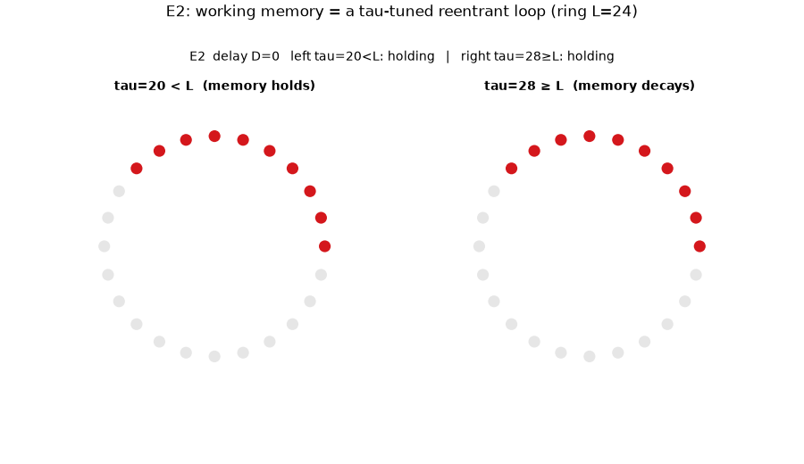
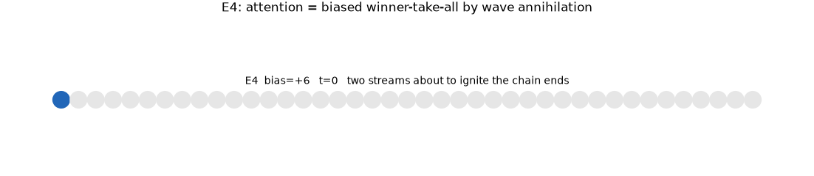
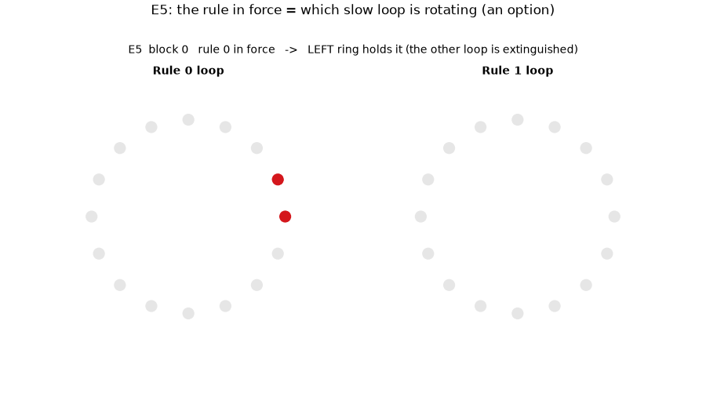
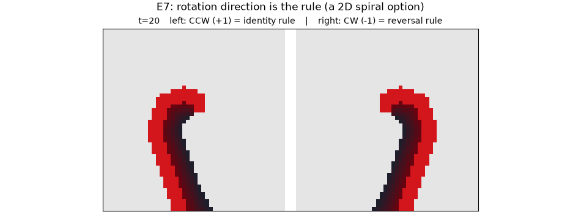
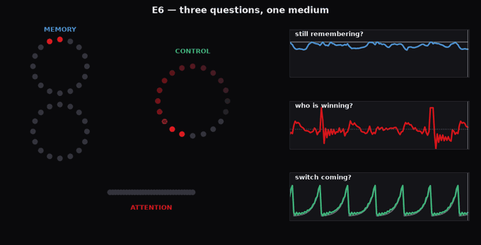
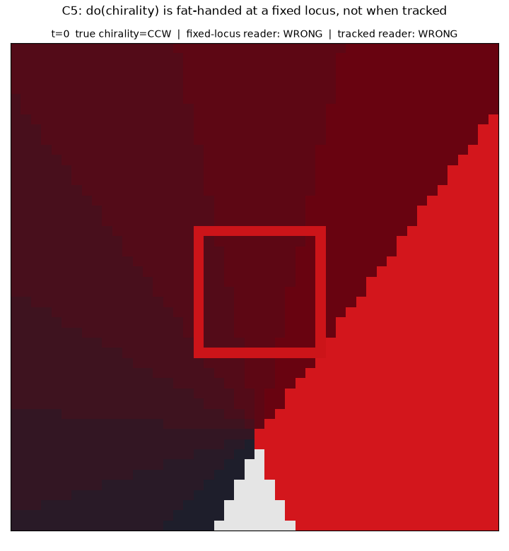

Memory, attention, control — this is a walkthrough of how all three can come out of a single excitable medium, with nothing built in. Scroll to watch it happen.
The usual picture of the brain is a set of modules: a memory chip, an attention spotlight, a control unit, wired together like an appliance.
This project explores the opposite hunch. Start with one uniform, twitchy medium — think of a vast field of grass where a gust can start a wave that ripples across it. Don't add any special machinery. Then ask: how much of what looks like memory, attention, and control is already lurking in the way that field moves?
The surprising answer, below, is: a lot. The same medium, asked different questions, gives you all three.
Each cell does one dumb thing: rest, briefly fire when enough neighbours are firing, then go quiet for a while before it can fire again — like grass that burns, then needs time to regrow before it can catch again.
Give a whole grid of these cells a random shove and the firing doesn't fizzle out and doesn't blow up. It settles into rotating spiral waves that sustain themselves indefinitely. This churning repertoire of patterns is the raw material for everything that follows — it's what reward will later shape, and what an observer will later read.
range r=2, active window a=6, threshold θ≈4). A cell cycles rest → active (1…a) → refractory (a+1…τ) → rest; τ is the recovery time. Colour = state: pale grey rested, bright red active crest, darkening tail through refractory. See E0 — substrate characterisation.Those spirals aren't a given. They appear only in a narrow band between two ways of failing.
Turn a single dial — how easily each cell catches fire from its neighbours. Set it too high and a spark can't spread: the medium goes dark and stays there. Set it too low and everything ignites at once — a formless boil with no structure to read. Only in between does it stay poised: alive, structured, never settling down. That knife-edge is where every behaviour in this story lives.
θ — at a fixed substrate point (r=2, a=6, τ=14, no spontaneous firing). θ≈6 is subcritical (activity dies); θ≈4 is the organised band (self-sustaining spiral cores); θ≈2 is supercritical (saturated/turbulent). The middle is the classic excitable-media critical band. See E0 — substrate characterisation.The medium already produces a zoo of patterns on its own. Learning here isn't about installing a new circuit. It's about a single reward signal quietly keeping the patterns that happen to be useful and letting the rest fade.
That's the whole move, borrowed from two ideas: the brain works inside-out, generating activity first and matching it to the world second (Buzsáki); and a bare scalar reward is enough to select behaviour (Sutton). Everything below is one of these selected patterns, seen in motion.

Where do you keep something in mind? Here, in a wave that keeps going around a loop.
Two identical rings are lit the same way. The only difference is how fast each cell recovers. On the left, cells recover just in time for the wave to come back around — so the pulse keeps circling, and the signal is held. On the right, cells recover a touch too slowly; the wave runs into its own not-yet-ready tail and dies within a lap — the signal is lost.
Memory isn't a storage module here. It's a loop the medium has been tuned to forget slowly.
L. Sustains when the recovery time τ < L (the wavefront always meets rested cells); collapses when τ ≥ L (the refractory tail blocks reentry). Tuning one timescale flips remembering vs forgetting. Full result: E2 — working memory.
Picking one thing over another usually gets explained with an "inhibition" circuit that suppresses the loser. Here there's no such circuit.
Two waves start at opposite ends and travel toward each other. When they collide they wipe each other out — each runs into the other's spent, still-recovering wake and can't continue. Give the attended side a tiny head start and the collision lands off-centre, so the attended wave claims the middle. Winner-take-all falls out of the physics.
The competition is the recovery period. Nothing was added to make one side lose.

"Executive control" sounds like a manager sitting above everything. Here it's just: which memory loop is currently running.
Two context loops sit ready. Only one turns at a time (the same don't-stop trick from memory). Whichever one is spinning quietly sets the rule for how incoming signals get routed to responses. When the task switches, the other loop lights up and takes over. The "controller" is nothing but a standing pattern that biases everything downstream.
τ < L) that gates the fast stimulus→response mapping — control as a selectable option, not a dedicated module. See E5 — executive control.
Lift that idea off the 1-D loop and onto the full 2-D medium, and the "which loop" choice becomes something more striking: which way a spiral turns.
Two spirals are seeded with opposite handedness — one turning counter-clockwise, one clockwise — and each holds its spin for hundreds of steps. Make counter-clockwise mean one task rule and clockwise the other, and now the instruction the system is following is written purely in the direction of rotation. This echoes real cortical recordings where the direction a wave rotates carries task-relevant information.

Here's the payoff for everything so far. Take one medium, freeze it — never change a thing — then attach three simple readers, each watching the whole medium and asking one question.
On the left, one substrate runs three motifs at once: a memory pulse that sometimes dies, two attention waves colliding, a slow control clock sweeping round. On the right, three identical readers each track one question live — am I still remembering? who's winning? is a switch coming? — and each answer rises and falls with the truth. The readers share no special wiring. What makes one a "memory" reader and another an "attention" reader is only the question it asks.
That's the whole thesis in a single frame: memory, attention, and control were never parts bolted into the medium. They're questions you can put to it.

It's tempting to stop here and say "the spin is the rule." But a careful scientist has to ask: is that spin actually doing anything, or does it just look meaningful from a convenient vantage point?
Here's the trap, made visible. One spiral, one true spin. Two observers read it at the same time: one parked at a fixed spot, one that follows the spiral's core. The core drifts away from the fixed observer, who then reads the wrong direction — while the observer who tracks the core stays right. Same reality, opposite verdicts, decided only by where you look.
This is the honesty check the whole causal series is built around: a pattern is only a real handle on behaviour if you can show it isn't an artefact of the measurement.
So how do you prove the pattern matters? Not by poking the wave directly — that's clumsy, and (beat 8) you might just be fooling your own reader. You change one ingredient of the recipe and watch whether the behaviour survives.
Both sides are seeded as the same spiral. The only difference is a single dial — how easily a cell catches fire. Nudge it on the right and the spiral can't sustain its core; it fades to nothing within moments, and the rule it was carrying is gone. The left, untouched, holds the rule the whole way. Same starting pattern, one parameter apart — and that parameter alone decides whether the context is still there to be used later.
The takeaway: a rotating core isn't just a pretty side-effect. It has to persist for the system to use it — the persistence is necessary, not decorative.
do(θ): two spirals with identical nucleation differing only in lattice threshold. Raising θ kills the persistent core, so rule-switching collapses (0.85 → 0.52) while a re-nucleated single-rule control is spared (0.90 vs 0.89) — the persistent core is necessary. See C6 — do(θ_χ).Memory was a loop. Attention was two waves cancelling. Control was choosing which loop spins — and you just watched all three read out of one frozen medium at once, by three readers that differed only in the question they asked. None of them were built in. That's the whole thesis, made watchable.
This is an exploratory computational study, not a claim about real neurons. The animations illustrate mechanisms; they don't prove the brain works this way.
Every headline here has a caveats section in the notebook, and the whole program has been through an independent integrity review — checking each number against the code, flagging what's overstated, and documenting one real reproducibility bug that was found and fixed. Accessible framing shouldn't mean overclaiming, so the honest limits travel with the story.